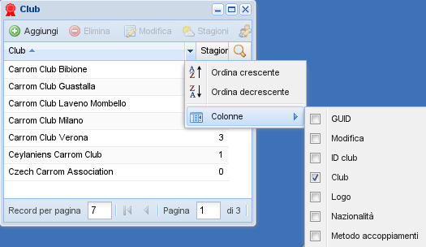

Anagrafiche di base¶
Tutte queste maschere hanno un comportamento molto simile e mostrano quattordici record alla volta in una griglia.
In alto c'è il menu specifico per la maschera, dove alcune voci potrebbero essere disattivate, ad esempio quando sia necessario avere un record selezionato per poter eseguire una certa azione. In genere, le medesime voci sono presenti anche nel menu contestuale che si ottiene mantenendo premuto il tasto destro del mouse su un particolare record nella griglia.
In basso c'è la barra di navigazione con la quale si può scorrere l'intera tabella, una pagina alla volta. Il numero di record mostrati in ogni pagina può essere cambiato: questo rende più facile la selezione dei giocatori da iscrivere a un torneo, per esempio.
Suggerimento
La dimensione verticale di qualsiasi maschera può essere massimizzata con un doppio clic sulla barra del titolo. Un doppio clic sul numero di record per pagina lo adatterà alle dimensioni correnti della maschera.

Selezione delle colonne visibili¶
La griglia normalmente mostra un set minimo di campi, magari solo la descrizione dell'entità. Cliccando sul titolo delle colonne è possibile riordinare gli elementi secondo quel particolare campo, passando da un ordinamento crescente a quello descrescente e viceversa.
Sul bordo destro del titolo di ciascuna colonna è presente un pulsante che presenta un menu da dove è possibile selezionare il tipo di ordinamento della colonna, piuttosto che determinare quali siano le colonne visibili.